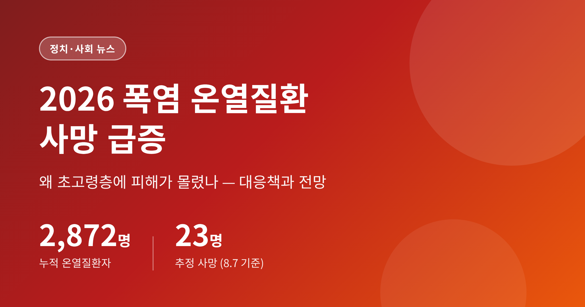
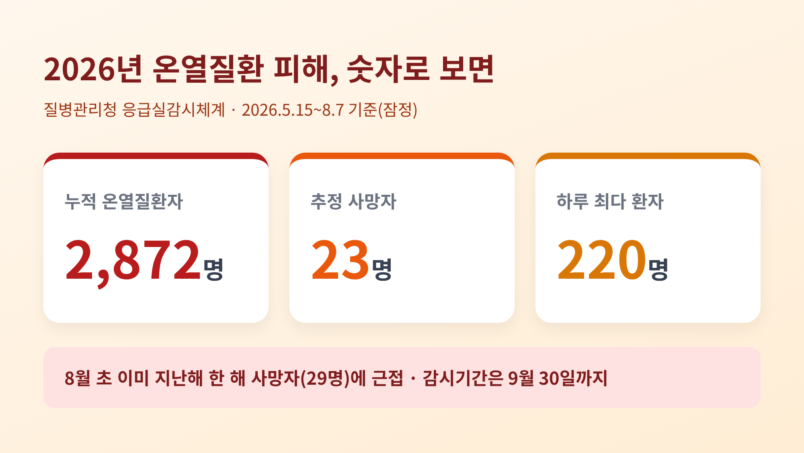
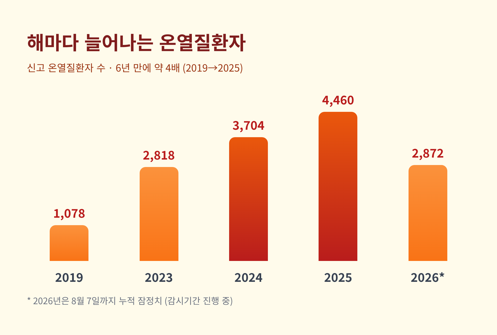
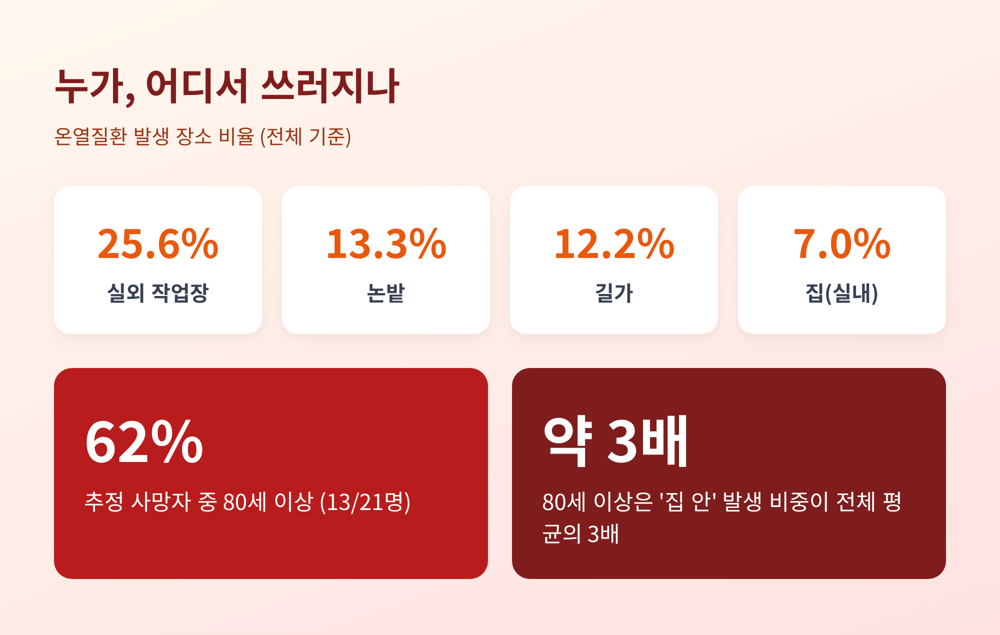
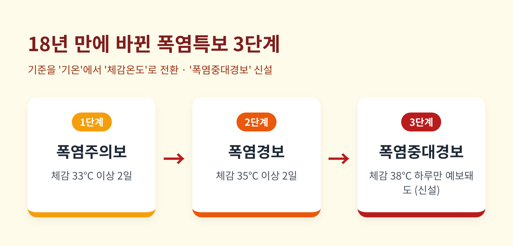
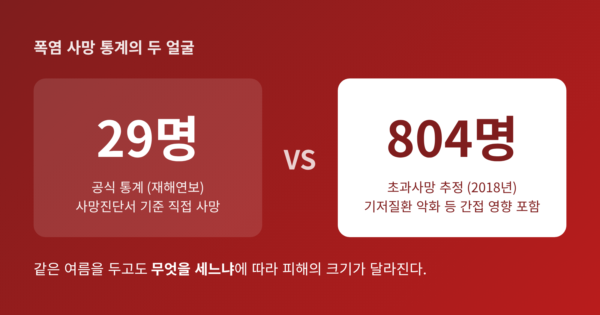

이번 글에서는 2026년 여름 폭염으로 온열질환 사망이 급증한 상황을 정리해 보겠습니다. 무슨 일이 벌어졌는지, 왜 초고령층에 피해가 몰렸는지, 정부와 지자체는 어떻게 대응하고 있는지 차례로 짚겠습니다. 책임 소재가 걸린 사안인 만큼, 대응에 대한 평가와 비판을 함께 담았습니다.
먼저 핵심부터 말씀드립니다. 질병관리청 집계로 올해 5월 15일부터 8월 7일까지 온열질환자는 2,872명, 추정 사망자는 23명입니다. 8월 초에 이미 지난해 한 해 사망자(29명)에 바짝 다가섰습니다. 감시 기간은 9월 말까지 남아 있어, 피해는 더 늘어날 수 있습니다.
올여름 더위는 기록을 갈아치웠습니다. 7월 31일 경남 양산에서 41.4도가 관측됐습니다. 기상 관측 이래 가장 높은 일최고기온입니다. 절기상 가을 문턱인 입추가 지나서도 폭염은 물러서지 않았습니다.
응급실 상황은 숫자로 드러납니다. 8월 초에는 하루 환자가 206명, 209명, 220명, 185명으로 연일 100명을 훌쩍 넘겼습니다. 지역별로도 하루 사이 경기 71명, 서울 43명이 쏟아졌습니다. 인구가 밀집한 수도권의 피해가 특히 두드러졌습니다.
여기서 한 가지 짚고 넘어가겠습니다. 이 수치는 전국 표본 응급실이 참여하는 '감시체계' 집계입니다. 전수조사가 아니라 잠정치이며, 통계청의 사망원인통계와는 다를 수 있습니다. 숫자를 읽을 때 유의할 대목입니다.

올해가 유독 나쁜 해일까요. 흐름을 보면 그렇게만 볼 수 없습니다.
신고된 온열질환자는 2023년 2,818명에서 2024년 3,704명, 2025년 4,460명으로 매년 늘었습니다. 6년 전인 2019년의 1,078명과 견주면 약 네 배입니다. 예전엔 폭염이 '유난히 더운 해'의 문제였습니다. 지금은 해마다 되풀이되는 상수가 됐습니다.
기후위기라는 말이 추상적으로 들릴지 모릅니다. 그러나 응급실을 찾는 사람의 수로 옮겨 놓으면 이야기가 달라집니다. 더위는 이제 날씨가 아니라 재난의 영역에 들어와 있습니다.

가장 아픈 대목은 피해가 특정 계층에 쏠렸다는 점입니다.
5월 15일부터 8월 4일까지 추정 사망자 21명 가운데 13명이 80세 이상이었습니다. 열에 여섯이 넘습니다. 인구 10만 명당 신고 환자 수도 80세 이상이 12.5명으로 전 연령대 중 가장 높았습니다.
발생 장소를 보면 취약함의 결이 나뉩니다. 전체로는 실외 작업장이 25.6퍼센트로 가장 많고, 논밭 13.3퍼센트, 길가 12.2퍼센트가 뒤를 잇습니다. 야외에서 일하는 사람들이 먼저 쓰러진다는 뜻입니다. 그런데 80세 이상만 떼어 보면 그림이 다릅니다. 논밭에 이어 길가, 그리고 집 안에서 변을 당한 비중이 전체 평균의 세 배에 달했습니다.
집이 더는 안전지대가 아니라는 신호입니다. 고령자는 체온을 조절하는 힘이 약하고, 초기 증상을 스스로 알아채기 어렵습니다. 냉방을 꺼리거나 도움을 청하지 못한 채 홀로 방 안에서 악화되는 경우가 적지 않습니다.
특히 농사를 짓는 고령자가 위태롭습니다. 뙤약볕 아래 논밭에는 그늘도, 곁에서 살펴줄 사람도 마땅치 않습니다. 홀로 사는 노인이라면 몸에 이상을 느껴도 손을 내밀 이웃이 가까이 없습니다. 야외에서 일하는 노동자와 농업인, 그리고 냉방에서 소외된 쪽방촌 주민은 폭염의 최전선에 놓인 사람들입니다.

정부는 올여름 폭염을 '기후 재난'으로 규정했습니다. 고용노동부는 '폭염 대비 노동자 건강보호 대책'을 시행하며, 본부와 전국 지방관서에 '폭염안전 특별대책반'을 뒀습니다. 5월 15일부터 9월 30일까지를 대책 기간으로 잡고, 취약 사업장을 집중 감독하며 온열질환 발생 시 현장에 즉시 출동하도록 했습니다.
돈이 드는 지원도 있습니다. 50인 미만 사업장에는 이동식 에어컨과 제빙기 구매비의 70퍼센트를 최대 2,000만 원까지 지원합니다. 50억 원 미만 소규모 건설현장에는 장비 임차비의 80퍼센트를 최대 6개월간 대줍니다. 취약계층을 위해서는 경로당·복지관·도서관을 무더위쉼터로 열어 두었습니다.
제도 자체도 바뀌었습니다. 기상청은 18년 만에 폭염특보 체계를 손봤습니다. 기준을 단순 기온에서 습도·바람·일사를 반영한 '체감온도'로 바꾸고, 단계도 늘렸습니다. 폭염주의보(체감 33도)와 폭염경보(체감 35도)에 더해, 체감 38도가 하루만 예보돼도 발령되는 '폭염중대경보'를 새로 만들었습니다.

방향은 옳습니다. 다만 현장에서 얼마나 작동하느냐는 다른 문제입니다.
지원책의 사각지대가 먼저 지적됩니다. 이동식 에어컨 지원은 사업주가 신청해야 닿습니다. 정작 위험한 영세 사업장이나 특수고용·일용직은 정보와 여력에서 밀리기 쉽습니다. 무더위쉼터도 거리가 멀거나 야간에 닫혀 있으면, 홀로 사는 고령자에게는 그림의 떡이 되곤 합니다.
폭염이 재난이라면, 재난에 걸맞은 강제력이 있느냐는 물음도 남습니다. 일정 온도에서 옥외 작업을 멈추게 하는 '작업중지권'이 실제로 지켜지는지, 계도와 권고를 넘어선 규범이 필요하다는 목소리가 나옵니다. 저는 이 대목이 다음 여름의 인명피해를 가를 지점이라고 생각합니다.
한 가지 비교가 시사적입니다. 폭염 사망 규모는 나라마다 크게 다릅니다. 2003년 유럽을 덮친 대형 폭염에서는 수만 명이 목숨을 잃었습니다. 전문가들은 그 차이의 상당 부분을 냉방 인프라에서 찾습니다. 에어컨이 얼마나 보급됐는지, 전기요금을 감당할 수 있는지가 생사를 가른다는 것입니다. 폭염 대책이 단순한 날씨 대응을 넘어 복지와 에너지의 문제로 이어지는 이유입니다.
폭염 사망을 두고 두 개의 숫자가 존재합니다. 행정안전부 재해연보는 사망진단서에 적힌 직접 사망만 세어, 연 29명에서 108명 수준으로 집계합니다. 반면 질병관리청의 '초과사망' 추정은 기저질환 악화 같은 간접 영향까지 넣습니다. 역대급이던 2018년에는 이 방식으로 한 해 804명이 폭염 탓에 숨진 것으로 추정됐습니다.
같은 여름을 두고 '29명'과 '804명'이 갈립니다. 무엇을 세느냐에 따라 피해의 크기가 달라지는 것입니다.

전망은 낙관하기 어렵습니다. 폭염은 해마다 더 길고 더 독해지는 쪽으로 가고 있습니다. 제도와 예산은 뒤따라 정비되고 있지만, 가장 약한 이들에게 닿기까지는 늘 시차가 있습니다.
끝으로 한 가지만 덧붙이겠습니다. 폭염은 모두에게 공평하게 덥지만, 그 대가는 결코 공평하지 않습니다.
— 결국 재난의 얼굴은 "가장 약한 자리에서" 가장 또렷하게 드러납니다.
올여름의 숫자를 기록으로만 남길지, 다음 여름을 바꾸는 계기로 삼을지. 그 답은 더위가 아니라 우리에게 달려 있지 않을까 합니다.